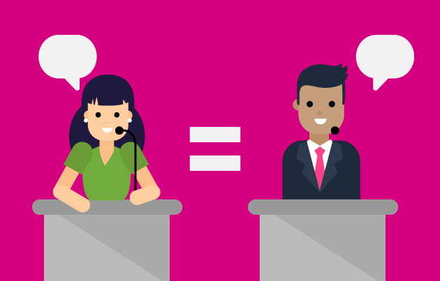
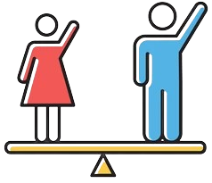

¿Qué es la paridad de género?
La paridad de género busca garantizar que mujeres y hombres participen en condiciones equitativas para roles de liderazgo y toma de decisiones. Este principio, respaldado por la Constitución en México, no solo fomenta la igualdad de oportunidades, sino que también elimina prejuicios y promueve la inclusión, fortaleciendo una sociedad más justa y plural. De esta forma, se contribuye al desarrollo sostenible al aprovechar el potencial de toda la población.
¿Por qué es importante la paridad de género?
Garantizar la paridad en espacios de representación pública asegura decisiones que reflejan las necesidades de toda la población. La iniciativa promueve la superación de estigmas de género históricos y favorece la implementación de políticas más integradoras y eficientes, asegurando que todas las voces sean escuchadas sin distinción de género.
La paridad de género no solo impacta a nivel político o social, sino que también inspira a futuras generaciones a crecer en un mundo donde la equidad es una realidad tangible, fomentando valores de respeto y colaboración desde temprana edad.
Reforma Constitucional de 2019: #ParidadEnTodo
La reforma de 2019 marcó un antes y un después en la historia política de México. Por primera vez, se institucionalizó la paridad en los tres poderes del Estado, en todos los niveles de gobierno y ámbitos públicos. Este avance garantiza que las mujeres ocupen al menos la mitad de los espacios de toma de decisiones, fortaleciendo el acceso justo a posiciones de poder y la representación equitativa de todas y todos.
Desafíos actuales y avances hacia la equidad
A pesar de los avances, persisten retos como la discriminación, los roles tradicionales y la violencia política hacia las mujeres, que limitan su acceso a espacios de liderazgo. Abordar estas barreras requiere políticas públicas efectivas, la implementación de nuevas leyes que regulen su cumplimiento y esfuerzos colectivos para transformar los estereotipos de género en todos los ámbitos.
En busca de una democracia inclusiva
En el marco del Proceso Electoral Federal 2020-2021, el Instituto Nacional de las Mujeres destacó la importancia de garantizar los derechos político-electorales de todas las mujeres, con especial atención a quienes enfrentan mayores barreras, como las indígenas, afromexicanas, jóvenes y con discapacidad. Este esfuerzo busca promover una democracia equitativa, en la que todas las personas, independientemente de su género, sean tomadas en cuenta y representadas.